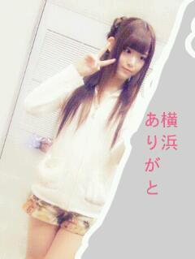

2013/0216Sat１ヵ月ぶりの再会っ(o・・o)
こんばんごっっ(o・・o)
さゆりんごっっ(o・・o)
ハッピーバレンタイン〜＼(^^)／
いっぱい貰えて
うれしいー＼(^^)／
みんな手作りのん上手すぎんよ〜＼(^_^)(^_^)／
やっぱり女の子やな〜＼(^^)／
え？松村は作ったんかって！？
ふふふ
つくってないよね〜(;_;)
ちゃうねん、ちゃうねん〜
松村も、今年は絶対に作ったろ〜って
おもっとったんよ〜(;_;)
けど、こういうときに限って時間がない(;_;)(;_;)(;_;)(;_;)(;_;)(;_;)
ほんまに！！
うそちゃう！
今月中にはつくりまつ(;_;)
そして今日は横浜で握手会でした！
寒いなかきてくださり
ありがとうございました♪
前の横浜は大雪やったので
晴れてよかった(*^^*)
明日は京都であります♪
寒いでしょうがよかったら
きてください(;_;)
すみません( ；∀；)
今日の服です!!

白のニットに
お花のズボンです＼(^^)／
ズボンなんて珍しいね！との
お声を沢山いただきました^^
自分も普段はワンピースばかりなので
少し恥ずかしかったです///
明日は何着よかな〜^^♪
お楽しみに
それでは皆さま
明日もよろしくお願いします♪
今日はお疲れ様でした♪
さゆりんごでしたっ(o・・o)/~
さいなら♪
2013/02/16 22:18


コメント(747)
みんなが幸せが一番！！
。
。゜ ★ :-*♪:-*
。゜ ★ :-*♪:-*
¶n_n_￣|..∧_∧:-*♪:-*
.(￣￣￣|ロ|.(๑ت๑*):-*
.[[＝＝＝|_|=[U★U]
∠oooo=oo=oooo┘ ⊃⊃
〓〓乃〓〓木〓〓坂〓〓46〓〓
こんばんわ(๑ت๑)
マイペース推進してますっ♪
なんでこんなタイトルにしたかと言うとねっ、、最近悩んでる友達とかおおいからさ、みんなが幸せが一番やなぁ～って思いましたっ★(๑･ิω･ิ๑)
当たり前のことかもしれんけど、それを大切にしたいってねっ(笑)
まじめな入りになったけど、、
今日は握手会お疲れ様(≧∀≦)★
僕は行けてないんやけどね、行ったら絶対緊張してしまうやんっ(笑)って思う★(๑ت๑)
生写真のエプロンとか黒ワンピもほしーなぁ
そういえばね、今日でっかいミッキーマウスgetしたんよー(≧∀≦):-*110th Anniversary って書いてある(笑)
めっちゃ可愛いんやけど、画像載せれんよぉー(>_<)(笑)
さゆりんごは、相変わらずおしゃれやね(≧∀≦):-*:-*
明日は、、京都やねっ★
5thの京都はいけるんやけどねっ(笑)
明日も頑張ろ～♪
１日マイペース♪
１日楽しく過ごせますように…★
こうたん★(๑ت๑)
え、
さゆりんが作るの…？←
なに作るのー？笑
さゆりんの私服かわいいー(*≧∀≦*)！
握手会お疲れ様です
こんばんは♪
明日も頑張ってください(^-^)/
では、お休みなさい(-.-)Zzz・・・・
ヾ(＠⌒ー⌒＠)ノ
たわいもない話だけれども（笑）
ペンライトの色了解です(*^_^*)
LIVEで振りまくっとくわ♡♡
5thも楽しみです＊
ズボン珍しいね、かわいい
それじゃ、またね
うれしかったよー(ノ)･ω･(ヾ)
だいすきー！
さゆりんごからチョコもらいたいわ。
明日握手会行くよ。
よろしくお願いします。
握手会、大変やけど頑張りや(^o^)/
りんごもやればめちゃくちゃおいしい料理できるよチョコがんばってね
ズボンも似合いますね
＼(^^)／☆
お菓子作るときは、味見忘れないようにしてくださいね(笑)
３月の握手会、誕生日の日に行きたいですねー♪
次の更新も待ってます♪
今日の服可愛過ぎだ！笑
見た瞬間リアルに「可愛い…」って言っちゃった…w
握手会お疲れ様〜(^^)／~~~
大学受験終わったから今度初めて握手会行ってみる！！楽しみ(((o(*ﾟ▽ﾟ*)o)))
あでゅー！
楽しかったです( ´ ▽ ` )ﾉ
チョコ作れてないのは料理スキルがないからじゃなくて時間がなかったんだね！笑
あと今日受けたさゆりんごパンチは成人になったためか若干色気が入ってた気がしたよ笑
今日いけなかったー（ ＴДＴ）
さゆりんに早く会いたいのに～(TT)
でも来月の個別いくからね♪
時間がないとかさゆりん忙しんだね！体調崩さないようにね(・_・;
んじゃ(‘ー‘)/~~
初コメかも
握手会行きたかったorz
今度秋田にも握手会に来て笑
握手会いきたいなー(^-^)/
さゆりんの服可愛い＼(^o^)／
見惚れました笑
それではさいならー
バレンタインいっぱいもらったんだ‼
モテモテだなさゆりん(o^^o)
さゆりんチョコ楽しみだな*\(^o^)/*クオリティ高そう笑
さゆりんオシャレだね♪
服めっちゃ似合ってるね！かわいい( ^ω^ )
この頃寒いけど風邪引かないようにね(・Д・)ノ
さゆりん頑張ってね‼
上手くいってもいかんくても事件になるから作らへんかったらわかるでー(/-▽-)/ふっふっふｗ
今からみんなの感想が楽しみやわ(笑)
４部のあれにはビックリしたけど(￣▽￣;)ハハハ
続きを話そうとしたら、話すことが吹っ飛んだよWWW
んで、続きは…
焼きチョコは、キャンプとかで火を起こす時に使うバーナーを使うといいよ(゜∀゜)
ただ、使うときは注意しないと火事になっちゃうから……
やらない方がいいかも…WWW
京都、楽しんできてね＼(⌒∇⌒)／
さゆりんごのズボン姿初めてみました！
すっごく似合ってます＾＾
これからもお仕事頑張ってくださいっ
応援してます！
さゆりん、チョコ作るんか、今月中に作るんか。
明日も握手会楽しんで来いよー
え～と、え～と、え～と、え～と、え～と忘れました
んじゃねー(*^▽^)/★*☆♪
さゆりん似合ってるよ～(^O^)
素敵です！
握手会行きたかったです^^;
いつかさゆりんと握手できたらいいな！
明日も寒いかもだけど楽しんで！(^^ゞ
がんば！！
さゆりんこんばんごっ(o^^o)
欲しいな〜…。チョコ欲しいなー。さゆりんからチョコが欲しいなー！！笑
いやもうチョコってよりさゆりんから何かプレゼント欲しいわ（笑）
確かにりんごのパンツスタイルはあんまり見たことないね。
うーん、おれも早くりんごに会いたいけど5thまでの辛抱かなっっ(´･_･`)
あ、でも一周年ライブがあるか。
よしっ！
勉強しよ（笑）
おやすみなんよっ(o・・o)
お疲れ様♪
ほんまに行きたかった(>_<)
暇すぎたからずっと寝てた(笑)
明日はとうとう会えるー！
ひゃっほーい！
ズボン珍しいな
明日の服装楽しみや
髪型はまあおろしてくれると信じてるんで(笑)
期待を裏切らないでくださゆりん←
写メ可愛い(//∇//)
んじゃあまた寝るわw
おろしまちゅむらしかー！
ほなねﾉｼ
まっつん
何作るの？
てか
作らん方がry
んじゃ
応援してまーす
またねー(^_^)ﾉｼ
俺は、バレンタインチョコ一個ももらえなかった
明日の京都での握手会行きたいけど受験勉強で忙しい
けど本命の高校受験が終わったら絶対行くから待っててね
さゆりん応援してね
こんばんわ！
握手会お疲れ様！
さゆりんの珍しいズボン姿みたかったー(*_*)
次の個別は絶対行くからまたはいてね！笑
さゆりんからバレンタイン欲しいな〜(￣▽￣)笑
明日も元気に頑張ってください♩
ひろ
明日も頑張れ！
早くさゆりんに会いたいっす！
ﾋﾞｯｸｻｲﾄの個別行くからね！
私服かわいいね♪
今月中に作ってあげるのもいいのだけど・・・
もはやバレンタイン関係ないねｗ
ホントに最近忙しそうで
5thやらライブのことやら
んまあそれくらい仕事の面で充実してるのはいいことですが
今日も明日も朝から晩まで握手会、大変だと思うけどがんばってね！＞＜
最近握手会行くたびにファンが多くて
若干昔に比べて元気もないかなって感じがして
そればかりが心配でございます・・・
ズボンも全然イケるね♪
まっちゅん頑張ったら1番お菓子作りうまいやろ（笑）寧々ちゃんにねねちびは可愛かったがちびはひどいな（笑）
エセ関西弁のネタはさゆりんやろ？
きらちゃんバレンタイン待ってたけど来ないから病んでたよ
あっ明日会ったらきらちゃんに誕生日おめでとうって最初に言ったてなあ！！たぶん鼻血出すから（笑）
体に気をつけてね
連日やけど体調に気をつけてゆっくり休んでね
自分は昨年名古屋以来ですねの2ヶ月ぶりになりました。2ヶ月間隔空いただけで久しぶりって思える、自分も少しさゆりん依存症でてきたのかな。
明日の京都も行くのでよろしくお願いします。
明日行くからね(o^∀^o)
１ヶ月長かった(笑)
まあ、元気そうで良かった。
ちなみに京都着いたら雪舞ってたよ。
明日も寒そうやね。
明日は重役出勤じゃなく←、一部から回るのでよろしく
ほなね(o・・o)/~
ほんとに最近寒いね～
さゆりんも風邪とかひかずに頑張ってね!!
カキちゃんですよ。
お疲れちゃーん
まっつんが作ったチョコは日村さんに
あげたやつのイメージしかないけど・・・。
あれはあれでおいしそうだった・・・ような・・気も・。。
まっつんが愛情込めて作ったチョコなら絶対に
おいしい
うん。
おいしいに決まってる
ズボンも似合ってるよ
多分、なんでも似合うと思う。ロングでもミニでも
うらやましい～
早くまっんと握手したいけど、
名古屋に来てくれるまで我慢、我慢。
ほんじゃね
カキちゃんより。
明日は京都なんだ！俺は明日大阪から埼玉に帰るよ(^.^)
さゆりんはチョコ何個貰ったの？
明日の握手会は行けないけど来月の幕張メッセの全握は絶対に行くね！
またコメントするね
さゆも女やろ(笑)
服かわいいと思うよ！
京都かぁ、めっちゃ寒そうやな
私は受験勉強で行かれへんけど
さゆ、頑張ってね！
今日も
今日は握手会
どうでしたかぁーー
会えた
僕も
でも、次の
我慢
では明日は
楽しんで
たーちゃんより
コメントする